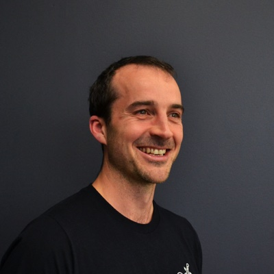

AAAI-27 Bridge Program
From Agent Benchmarks to Deployment Evidence
Bridging Evaluation Science and Deployment Practice
Your team has a benchmark score for an agent. Is that enough to decide whether to deploy it in your setting? Evaluators and practitioners audit two shared cases together, one in industrial maintenance and one in software engineering. Agent runs are recorded in advance, so no compute or coding is needed, and no measurement background is assumed.
About
A headline score records whether an agent met its objective. It does not say how, whether the tasks resemble your setting, or whether the agent leaked data, broke policy, took an unacceptable action, or needed so much correction that it saved no one any time.
Answering takes two communities. Evaluators know how scores are produced; practitioners know which failures are unacceptable and what must hold before anyone authorizes use. This Bridge brings evaluators and practitioners together to build a reusable method for connecting evaluation evidence to deployment decisions.
Evaluation science
Evaluation researchers, benchmark builders, and agent developers know whether a benchmark and scorer measure what they claim; contamination, run-to-run variance, and task coverage; and what a number can and cannot support.
Deployment practice
Maintenance, reliability, and software engineers, plant operators, applied AI engineers, and safety and human factors specialists know which failures are unacceptable and which are tolerable, how people check and correct an agent's work, and what must hold before anyone authorizes use.
How the audit works
Mixed teams of six to eight audit shared cases in four steps.
- Read the operational setting. Teams receive a description of the workflow, the people in it, and the proposed use of the agent. They do not see the benchmark yet.
- Derive what must hold. Write the deployment criteria: reliability, cost, safety, correction effort. Separate serious failures from tolerable ones.
- Check the evidence. Compare the criteria with benchmark scores and recorded agent runs. Mark which criteria the evidence supports and where the scorer may be wrong.
- Name the gaps. List the serious failures the evidence misses and what a supervised pilot must still establish before use is authorized.
We will release the reviewed audits and a draft reporting protocol that builds on PREP-Eval and maps to the Agentic Benchmark Checklist, BetterBench, and Evaluation Cards.
Cases
Every team audits the two shared cases. A third case on agent security is planned as an optional track and depends on participant interest. No case requires production access or private traces.
| Case | Setting | Evidence | The audit asks |
|---|---|---|---|
| 1. Industrial asset maintenance | An agent system supporting maintenance and reliability work on industrial assets: reading sensor data, diagnosing failure modes, and drafting work orders. | Recorded runs of a configured agent in AssetOpsBench's simulated maintenance environment. | Does a successful score support the operational claim? Where would an operator need to check, correct, or stop the system? |
| 2. Software engineering | Experienced developers working with AI assistance on their own open-source repositories. | METR's developer-productivity study and its task-level data, paired with a configured agent on SWE-bench Verified. | What does self-reported completion time capture? How does a small sample of developers affect uncertainty? What evidence would support extending the findings? |
| 3. Security of coding and tool‑using agents | A coding or IT-operations agent with access to repositories, tickets, and email. It reads untrusted content and can take actions with real consequences. | Recorded runs from agent-security benchmarks such as DoomArena and AgentDojo. | Does a low attack-success rate justify granting write access? Which failures are serious, such as leaking secrets, running destructive commands, or merging vulnerable code? Which are tolerable, such as refusing a benign task? |
Case packets, each with the operational setting and an audit template, will be shared before the event.
Call for Participation
We expect 100 to 150 participants. We invite evaluation researchers, benchmark builders, and agent developers; maintenance, reliability, and software engineers; plant operators; applied AI engineers; safety assurance and human factors researchers; and students. No measurement background is assumed. The Bridge is open to all AAAI-27 registrants; those who submit are placed in audit teams first.
How to take part
| Submission | Length | What to include | Leads to |
|---|---|---|---|
| Statement of interest | 1 page | Your background, domain, and interest. Practitioners can add a use case of up to 2 pages in the same PDF. | A place in an audit team |
| Paper | Short: 2–4 pages Full: 6–8 pages |
AAAI-27 format, non-archival. Published work is welcome. | A lightning talk and poster |
| Statement of interest, remote | 1 page | For those who cannot travel. | Reviewing the draft audits online |
Practitioner use cases describe a workflow, a decision about using an agent in it, and which failures would be serious or tolerable. Use public information only. Use cases help us form teams.
Topics
We welcome papers, statements of interest, and use cases from both evaluation and deployment. Topics include, but are not limited to:
- Whether benchmarks and scorers measure what they claim, including data contamination
- Stability of results across runs and tasks
- Coverage of deployment needs such as cost, safety, and correction effort
- Separating serious failures from tolerable ones
- Agents working alongside people
- What supervised pilots must establish
- Case studies from any domain, such as industrial maintenance and software engineering
Submission guidelines
- Submit through OpenReview by December 1, 2026 (AoE). Notifications will be sent on December 13, 2026.
- Papers use the AAAI-27 format; see the AAAI-27 author kit.
- Submissions are non-archival: they are not published in the AAAI-27 proceedings, and published work is welcome.
- New OpenReview profiles without an institutional email address can take time to be approved, so create your profile early.
- All participants are expected to follow the AAAI Code of Conduct.
Dates and Program
| Submissions due | December 1, 2026 (AoE) |
| Notifications | December 13, 2026 |
| Case packets released | TBD |
| Bridge at AAAI-27, Montréal | February 16–17, 2027 |
Program
Two days, in person, February 16–17, 2027. The detailed program is TBD and will be posted here.
Organizers
Bridge Committee
 Vedant KhandelwalIBM Research
Vedant KhandelwalIBM Research
 Dhaval PatelIBM Research
Dhaval PatelIBM Research
 Alexandre DrouinCohere and Mila
Alexandre DrouinCohere and Mila
 Lior HoreshIBM Research
Lior HoreshIBM Research

Jason StanleyServiceNow Lora AroyoGoogle DeepMind Yining HuaHarvard T.H. Chan School of Public Health and EvalScience Inc.
Yining HuaHarvard T.H. Chan School of Public Health and EvalScience Inc. EvalScience
EvalScience
 Corina PăsăreanuCarnegie Mellon University
Corina PăsăreanuCarnegie Mellon University
 Anka ReuelStanford University; Harvard Kennedy School and Harvard SEAS (from January 2027)
Anka ReuelStanford University; Harvard Kennedy School and Harvard SEAS (from January 2027)
Steering Committee


Contact
Questions about submissions, cases, or attending can go to Vedant Khandelwal (vedantk@ibm.com) or Dhaval Patel (pateldha@us.ibm.com), IBM Research.